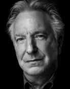

주요 출연진
다니엘 래드클리프

해리포터에서 해리포터를 연기했습니다.
루퍼트 그린트

해리포터에서 론 위즐리를 연기했습니다.
엠마 왓슨

해리포터에서 헤르미온느를 연기했습니다.
앨런 릭먼

해리포터에서 스네이프 교수를 연기했습니다.

해리포터 시리즈의 여섯 번째 이야기
어둠의 세력이 더욱 강력해져 머글 세계와 호그와트까지 위협해온다. 위험한 기운을 감지한 덤블도어 교수는 다가올 전투에 대비하기 위해 해리 포터와 함께 대장정의 길을 나선다. 볼드모트를 물리칠 수 있는 유일한 단서이자 그의 영혼을 나누어 놓은 7개의 호크룩스를 파괴하는 미션을 수행해야만 하는 것! 또한 덤블도어 교수는 호크룩스를 찾는 기억여행에 결정적 도움을 줄 슬러그혼 교수를 호그와트로 초청한다. 한편 학교에서는 계속된 수업과 함께 로맨스의 기운도 무르익는다. 해리는 자신도 모르게 지니에게 점점 끌리게 되고, 새로운 여자 친구가 생긴 론에게 헤르미온느는 묘한 질투심을 느끼는데...
해리포터에서 해리포터를 연기했습니다.
해리포터에서 론 위즐리를 연기했습니다.
해리포터에서 헤르미온느를 연기했습니다.

해리포터에서 스네이프 교수를 연기했습니다.